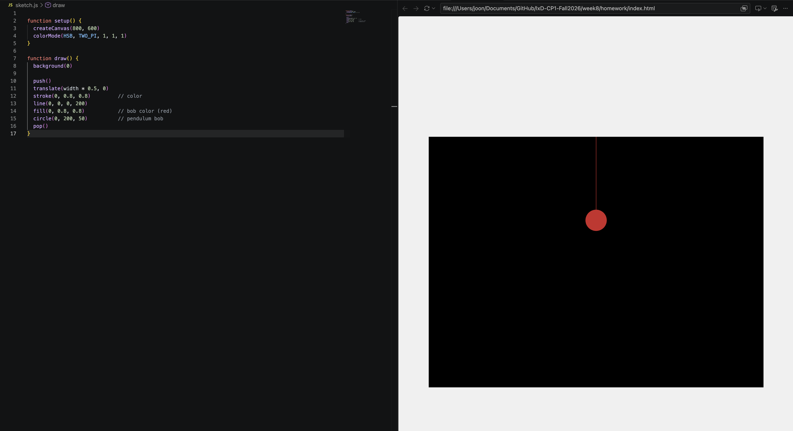
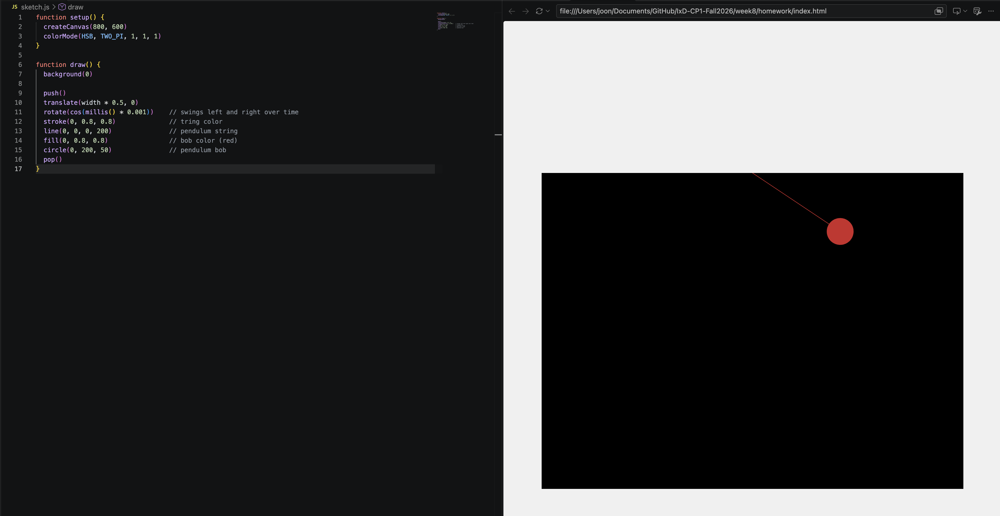
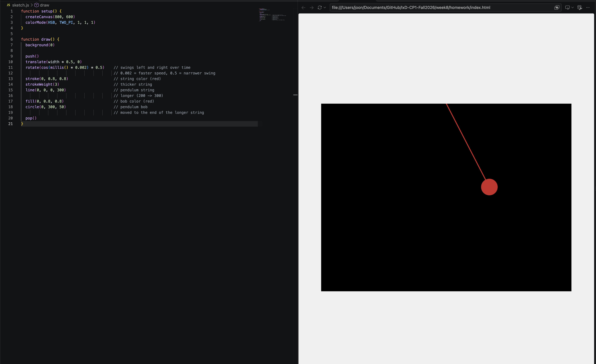
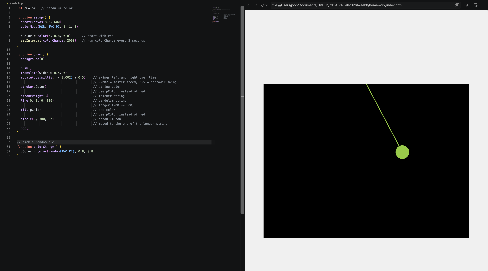
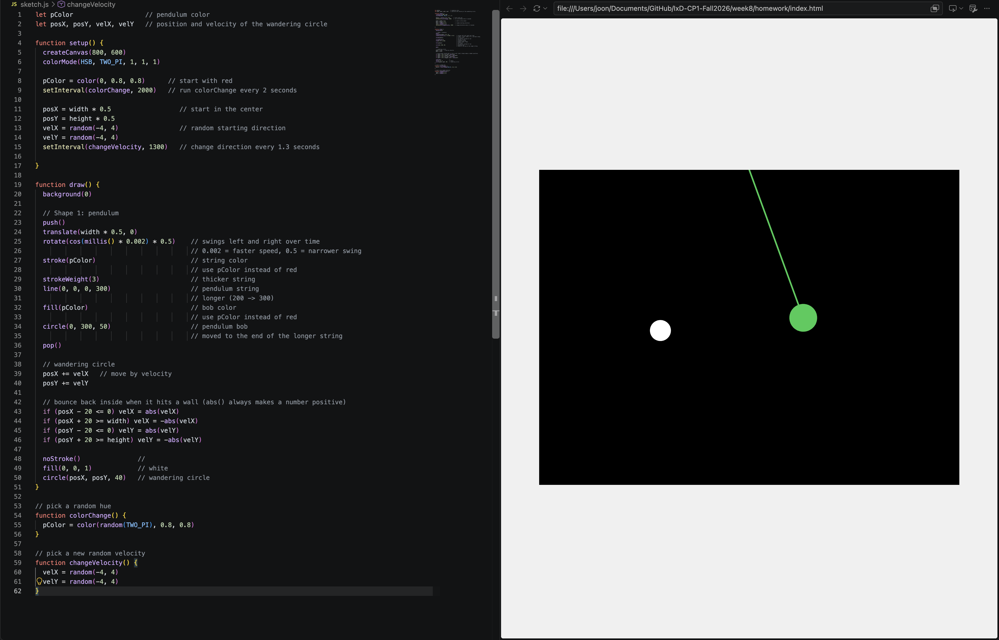
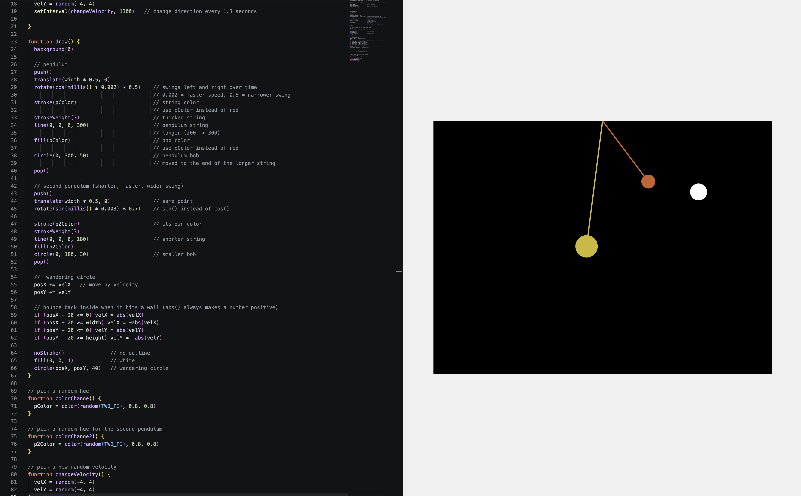

Two pendulums swing back and forth with sine and cosine functions, while a circle wanders around the canvas and changes direction on a timer. Every movement runs on a different timing, so they rarely line up and the rhythm keeps changing.

I started from the pendulum we built in class. I moved the origin to the top center of the canvas and drew a line with a circle at the end. It does not move yet.

I used cos(millis()) inside rotate() so the pendulum swings
left and right over time. The swing was too wide at this point.

I multiplied the cosine by 0.5 to make the swing narrower and changed the speed value to make it faster. I also made the pendulum longer and the string thicker.

I stored the pendulum color in a variable and used setInterval() to pick a
random hue every 2 seconds.

I added a second shape: a circle that moves around the canvas and picks a new random direction every 1.3 seconds. The pendulum swings about every 3.1 seconds and changes color every 2 seconds, so the three timings are out of sync.

I added a second, shorter pendulum hanging from the same point. It uses sin() instead
of cos() and a faster speed, so it swings at a different rhythm from the first pendulum.
It also changes color on its own timer, every 1.7 seconds.
In the code I wrote in class, the wandering circle bounced off the walls with velX *= -1,
but the sketch did not run. I asked Claude to check it. Besides fixing my errors, Claude pointed out
that because the circle picks a new random direction on a timer, it can get stuck shaking against a wall,
and suggested abs() instead. We had not covered abs() in class, so I asked about it.
These are the prompts I used:
abs() to bounce off the walls)
What I learned: abs() removes the minus sign from a number. Because the circle picks a random
direction every 1.3 seconds, flipping the velocity with *= -1 can make it shake against a wall.
With abs(), hitting the left wall always sends it to the right, and so on. The 20 is the radius
of the circle, so the bounce happens at its edge instead of its center.